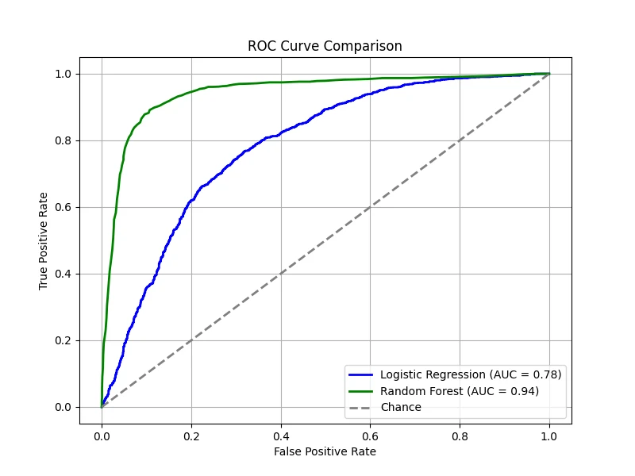
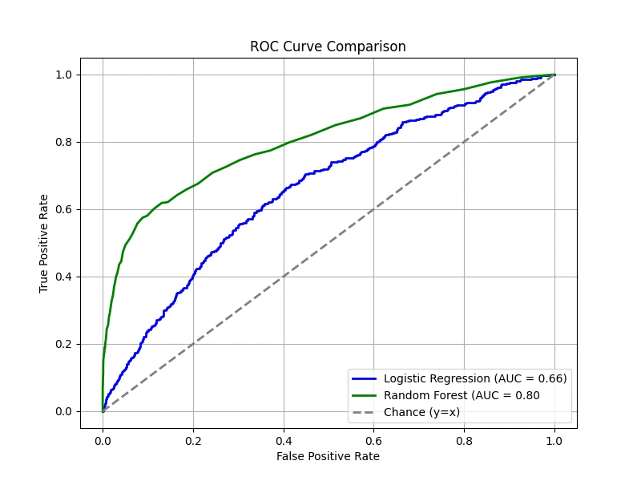
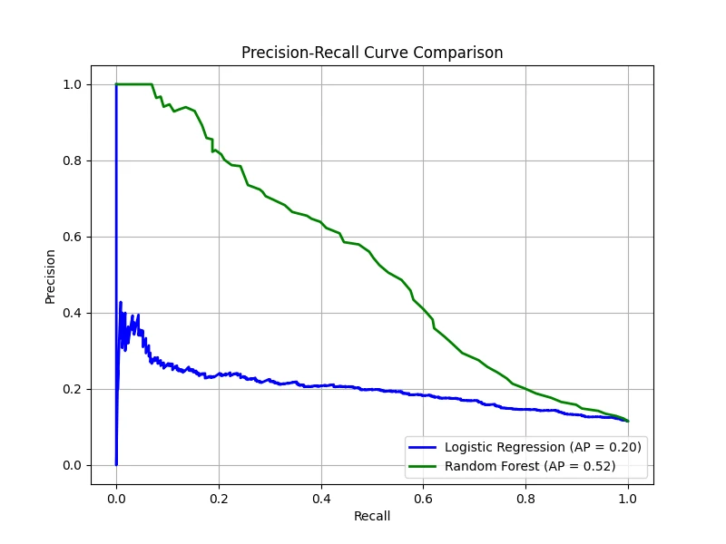

Introduction
Earlier, we introduced Bayesian inference and derived
posterior distributions for unknown parameters. We will later develop Markov chains
for modeling sequential data, noting that Markov Chain Monte Carlo (MCMC)
methods use the Markov property to sample from complex posterior distributions.
So far, our development of Bayesian statistics has focused on inference: given observed data, how should we update
our beliefs about unknown quantities? But inference alone does not tell us what to do. In many applications - medical diagnosis,
spam filtering, autonomous driving - we must ultimately choose an action based on uncertain information. Bayesian decision theory
provides the principled framework for making such optimal decisions under uncertainty.
The setup is as follows. An agent must choose an action \(a\) from a set
of possible actions \(\mathcal{A}\). The consequence of this action depends on the unknown
state of nature \(h \in \mathcal{H}\), which the agent cannot observe directly.
To quantify the cost of choosing an action \(a\) when the true state is \(h\), we introduce
a loss function \(l(h, a)\).
The key idea of Bayesian decision theory is to combine the loss function with the posterior distribution
\(p(h \mid \boldsymbol{x})\) obtained from observed evidence \(\boldsymbol{x}\) (or a dataset \(\mathcal{D}\)).
For any action \(a\), the posterior expected loss (or posterior risk) is defined as follows.
Definition: Posterior Expected Loss
Given evidence \(\boldsymbol{x}\) and a loss function \(l(h, a)\), the posterior expected loss of action
\(a \in \mathcal{A}\) is
\[
\rho(a \mid \boldsymbol{x}) = \mathbb{E}_{p(h \mid \boldsymbol{x})} [l(h, a)] = \sum_{h \in \mathcal{H}} l(h, a) \, p(h \mid \boldsymbol{x}).
\]
A rational agent should select the action that minimizes this expected loss. This leads to the central concept
of the section.
Definition: Bayes Estimator
The Bayes estimator (or Bayes decision rule / optimal policy)
is the action that minimizes the posterior expected loss:
\[
\pi^*(\boldsymbol{x}) = \arg \min_{a \in \mathcal{A}} \, \mathbb{E}_{p(h \mid \boldsymbol{x})}[l(h, a)].
\]
Equivalently, by defining the utility function \(U(h, a) = -l(h, a)\), which measures the
desirability of each action in each state, the Bayes estimator can be written as
\[
\pi^*(\boldsymbol{x}) = \arg \max_{a \in \mathcal{A}} \, \mathbb{E}_{h}[U(h, a)].
\]
This utility-maximization formulation is natural in economics, game theory, and
reinforcement learning, where the focus is on
maximizing expected rewards rather than minimizing losses.
The power of this framework lies in its generality: by choosing different loss functions, we recover many
familiar estimators and decision rules as special cases. We will see three such recoveries in this page.
For continuous parameters, squared-error loss yields the posterior mean and absolute-error loss yields the
posterior median. For discrete labels, zero-one loss yields the maximum a posteriori (MAP) estimate,
providing the decision-theoretic justification for choosing the most probable class at inference time.
After establishing these special cases, we will then connect the Bayesian formulation above to its
frequentist counterpart, showing that the two perspectives are operationally equivalent under mild regularity.
Continuous Parameters: Squared and Absolute Error Loss
We first specialize the framework to the setting where the unknown state of nature is a continuous
real-valued parameter. To match standard usage in parametric statistics, we write \(\theta \in \Theta \subseteq \mathbb{R}\)
in place of \(h \in \mathcal{H}\); the action space \(\mathcal{A}\) is also taken to be \(\Theta\), so
that an action \(a\) is a candidate value for \(\theta\). This is the situation of point estimation
revisited from a decision-theoretic standpoint. We treat the scalar case (\(\Theta \subseteq \mathbb{R}\)) for clarity
of exposition; the vector extension (\(\boldsymbol{\theta} \in \Theta \subseteq \mathbb{R}^k\) with squared-norm
loss \(\|\boldsymbol{\theta} - \boldsymbol{a}\|^2\)) follows the same logic and is developed in our later treatment of regression.
Two loss functions are particularly natural in this setting: squared-error loss, which
penalizes large deviations heavily, and absolute-error loss, which is more robust to
outliers. Each leads to a familiar Bayesian point estimator as the corresponding optimal action.
Squared-Error Loss and the Posterior Mean
Definition: Squared-Error Loss
For a continuous parameter \(\theta \in \Theta\) and an action \(a \in \Theta\), the
squared-error loss is
\[
l_2(\theta, a) := (\theta - a)^2.
\]
Under this loss, the posterior expected loss admits a clean closed-form minimizer: the posterior mean.
Theorem: Posterior Mean Minimizes Posterior Expected Squared-Error Loss
Suppose the posterior \(p(\theta \mid \boldsymbol{x})\) has finite second moment, i.e.,
\(\mathbb{E}_{p(\theta \mid \boldsymbol{x})}[\theta^2] < \infty\). Then under squared-error loss,
the posterior expected loss
\[
\rho(a \mid \boldsymbol{x}) = \mathbb{E}_{p(\theta \mid \boldsymbol{x})}[(\theta - a)^2]
\]
is uniquely minimized at the posterior mean
\[
a^* = \mathbb{E}_{p(\theta \mid \boldsymbol{x})}[\theta].
\]
Proof.
Expanding the square inside the expectation and using linearity,
\[
\rho(a \mid \boldsymbol{x}) = \mathbb{E}_{p(\theta \mid \boldsymbol{x})}[\theta^2] - 2 a \, \mathbb{E}_{p(\theta \mid \boldsymbol{x})}[\theta] + a^2.
\]
The first term does not depend on \(a\); the remaining terms form a quadratic in \(a\).
Differentiating with respect to \(a\),
\[
\frac{d \rho(a \mid \boldsymbol{x})}{d a} = -2 \, \mathbb{E}_{p(\theta \mid \boldsymbol{x})}[\theta] + 2 a,
\]
and setting the derivative to zero gives \(a^* = \mathbb{E}_{p(\theta \mid \boldsymbol{x})}[\theta]\).
The second derivative is \(2 > 0\), so this critical point is the unique global minimum. The finite
second-moment hypothesis ensures that \(\rho(a \mid \boldsymbol{x})\) is finite (and hence the minimum
is attained at a finite value).
The posterior mean is therefore the Bayes estimator under squared-error loss, often denoted
\(\hat{\theta}_{\text{MMSE}}\) (minimum mean squared error). This connects directly to the
bias–variance decomposition \(\operatorname{MSE}(\hat{\theta}) = \operatorname{Var}(\hat{\theta}) + \operatorname{Bias}(\hat{\theta})^2\)
we developed in the context of maximum likelihood estimation: the
posterior mean is the unique action that, integrated against the posterior, minimizes this combined
error metric.
Absolute-Error Loss and the Posterior Median
Definition: Absolute-Error Loss
For a continuous parameter \(\theta \in \Theta\) and an action \(a \in \Theta\), the
absolute-error loss is
\[
l_1(\theta, a) := |\theta - a|.
\]
Squared-error loss penalizes large deviations more aggressively than small ones — a deviation of 2 incurs
four times the loss of a deviation of 1. Absolute-error loss is linear in the magnitude of the deviation,
making it more robust when the posterior has heavy tails. The optimal action under this loss is the
posterior median.
Theorem: Posterior Median Minimizes Posterior Expected Absolute-Error Loss
Suppose the posterior \(p(\theta \mid \boldsymbol{x})\) has finite first moment, i.e.,
\(\mathbb{E}_{p(\theta \mid \boldsymbol{x})}[|\theta|] < \infty\), and admits a continuous CDF
\(F(\theta \mid \boldsymbol{x}) := \mathbb{P}(\theta \leq a \mid \boldsymbol{x})\). Then the posterior
expected loss
\[
\rho(a \mid \boldsymbol{x}) = \mathbb{E}_{p(\theta \mid \boldsymbol{x})}[|\theta - a|]
\]
is minimized at any posterior median \(m^*\), i.e., any value satisfying
\(F(m^* \mid \boldsymbol{x}) = \tfrac{1}{2}\).
Proof.
Split the expectation according to the sign of \(\theta - a\):
\[
\rho(a \mid \boldsymbol{x}) = \int_{-\infty}^{a} (a - \theta) \, p(\theta \mid \boldsymbol{x}) \, d\theta
+ \int_{a}^{\infty} (\theta - a) \, p(\theta \mid \boldsymbol{x}) \, d\theta.
\]
We differentiate with respect to \(a\) using Leibniz's rule, which states that
\[
\frac{d}{da} \int_{\alpha(a)}^{\beta(a)} g(\theta, a) \, d\theta
= g(\beta(a), a) \, \beta'(a) - g(\alpha(a), a) \, \alpha'(a) + \int_{\alpha(a)}^{\beta(a)} \frac{\partial g}{\partial a}(\theta, a) \, d\theta.
\]
Apply this to the first integral with \(\alpha(a) = -\infty\), \(\beta(a) = a\), and
\(g(\theta, a) = (a - \theta) p(\theta \mid \boldsymbol{x})\):
\[
\frac{d}{da} \int_{-\infty}^{a} (a - \theta) p(\theta \mid \boldsymbol{x}) \, d\theta
= \underbrace{(a - a) p(a \mid \boldsymbol{x}) \cdot 1}_{=\, 0 \text{ (boundary)}}
+ \int_{-\infty}^{a} \underbrace{\frac{\partial}{\partial a}(a - \theta)}_{=\, 1} p(\theta \mid \boldsymbol{x}) \, d\theta
= F(a \mid \boldsymbol{x}).
\]
Similarly for the second integral with \(\alpha(a) = a\), \(\beta(a) = +\infty\) (the upper-limit term vanishes
in the limit under the finite-first-moment hypothesis), and integrand derivative \(\partial_a(\theta - a) = -1\):
\[
\frac{d}{da} \int_{a}^{\infty} (\theta - a) p(\theta \mid \boldsymbol{x}) \, d\theta
= \underbrace{-(a - a) p(a \mid \boldsymbol{x})}_{=\, 0 \text{ (boundary)}}
+ \int_{a}^{\infty} (-1) p(\theta \mid \boldsymbol{x}) \, d\theta = -[1 - F(a \mid \boldsymbol{x})].
\]
Summing the two contributions,
\[
\frac{d \rho(a \mid \boldsymbol{x})}{d a} = F(a \mid \boldsymbol{x}) - [1 - F(a \mid \boldsymbol{x})] = 2 F(a \mid \boldsymbol{x}) - 1.
\]
Setting this to zero yields \(F(a \mid \boldsymbol{x}) = \tfrac{1}{2}\), i.e., \(a^* = m^*\) is a posterior median.
The second derivative is \(2 \, p(a \mid \boldsymbol{x}) \geq 0\), confirming that this critical point is a
(not necessarily strict) global minimum; uniqueness holds whenever the posterior density is positive at the median.
The Trio: MAP, Posterior Mean, Posterior Median
The three most common Bayesian point estimators correspond to three distinct loss functions:
- Zero-one loss (or its continuous limit) → MAP estimate (posterior mode), the action that maximizes the posterior density at a single point.
- Squared-error loss → posterior mean, the action that minimizes mean-squared deviation across the posterior.
- Absolute-error loss → posterior median, robust to heavy-tailed posteriors.
Far from being arbitrary heuristics, these three estimators are uniquely determined by the
choice of loss function. In machine learning, this perspective explains why regression
models trained with mean-squared error implicitly target the conditional mean \(\mathbb{E}[y \mid \boldsymbol{x}]\),
while quantile regression trained with absolute-error loss targets the conditional median — the difference
is not a matter of taste but a decision-theoretic consequence of the chosen loss. (The connection between
minimizing posterior expected loss as in our theorems above and minimizing expected loss against the
data-generating distribution as in machine learning practice is formalized in the next section.)
Frequentist Risk, Bayes Risk, and Minimax
So far we have framed decision theory from the Bayesian perspective: given observed data, we minimize
the expected loss with respect to the posterior. The classical, or frequentist, perspective
inverts this conditioning. There, the parameter \(\theta\) is treated as an unknown but fixed
quantity, and the data \(\boldsymbol{x}\) is treated as random; we evaluate a decision rule by averaging
its loss over hypothetical data realizations drawn from the data-generating distribution \(p(\boldsymbol{x} \mid \theta)\).
These two perspectives appear to start from opposite premises, yet they are connected by a precise
equivalence theorem. Establishing this equivalence is the central goal of this section. Along the way,
we will introduce the third major notion of optimality — minimax — and discuss its
interpretation as a worst-case guarantee.
Convention. Throughout this section, we work in the parametric setting introduced for
continuous parameters above, but allow \(\theta \in \Theta\) to be either scalar- or vector-valued. The
state of nature is the parameter \(\theta\) (replacing the general \(h \in \mathcal{H}\) of the introduction),
and a decision rule is a measurable function \(\delta : \mathcal{X} \to \mathcal{A}\)
mapping data to actions. When \(\mathcal{A} = \Theta\), the decision rule is exactly a
point estimator in the sense of statistical inference.
Whereas \(\pi^*(\boldsymbol{x})\) denoted the optimal decision rule under a given criterion, we
now use \(\delta\) for an arbitrary candidate decision rule whose risk we wish to evaluate;
optimality will then be defined as minimization of one of several risk notions introduced below.
Frequentist Risk
Definition: Frequentist Risk
Let \(\delta : \mathcal{X} \to \mathcal{A}\) be a decision rule, and let \(l(\theta, a)\) be a loss
function. The frequentist risk of \(\delta\) at parameter value \(\theta\) is the
expected loss when the data is drawn from \(p(\boldsymbol{x} \mid \theta)\):
\[
R(\theta, \delta) := \mathbb{E}_{p(\boldsymbol{x} \mid \theta)}[l(\theta, \delta(\boldsymbol{x}))]
= \int l(\theta, \delta(\boldsymbol{x})) \, p(\boldsymbol{x} \mid \theta) \, d\boldsymbol{x}.
\]
Three observations clarify the role of this definition. First, the parameter \(\theta\) is held fixed
while the data is averaged over — the opposite conditioning from the posterior expected loss \(\rho(a \mid \boldsymbol{x})\).
Second, \(R(\theta, \delta)\) is a function of \(\theta\): a single decision rule produces a
risk function over the entire parameter space, not a single number. Third, comparing two decision rules
therefore requires comparing two functions, and one risk curve may be lower for some \(\theta\) but
higher for others. This last observation motivates the notions of admissibility and minimax developed below.
Worked Example: Estimating a Gaussian Mean
To make the definition concrete, consider the canonical setting of estimating the mean of a Gaussian.
Suppose data \(x_1, \ldots, x_N \overset{\text{i.i.d.}}{\sim} \mathcal{N}(\theta, \sigma^2)\) with
\(\sigma^2\) known, and suppose we use the squared-error loss \(l_2(\theta, a) = (\theta - a)^2\).
The corresponding risk is the mean squared error
\[
R(\theta, \delta) = \mathbb{E}_{p(\boldsymbol{x} \mid \theta)}\!\left[(\theta - \delta(\boldsymbol{x}))^2\right] = \operatorname{MSE}(\delta).
\]
From the bias–variance decomposition introduced for maximum likelihood estimators
(where, in the language of estimators, \(\hat{\theta} = \delta(\boldsymbol{x})\)),
\[
\operatorname{MSE}(\delta) = \operatorname{Var}_{p(\boldsymbol{x} \mid \theta)}[\delta(\boldsymbol{x})] + \operatorname{Bias}(\delta)^2,
\qquad \operatorname{Bias}(\delta) := \mathbb{E}_{p(\boldsymbol{x} \mid \theta)}[\delta(\boldsymbol{x})] - \theta.
\]
We use this identity to compute the risk of three estimators.
(i) The sample mean \(\delta_1(\boldsymbol{x}) = \bar{x} = \tfrac{1}{N}\sum_n x_n\).
By linearity of expectation, \(\mathbb{E}[\bar{x}] = \theta\) (unbiased), and
\(\operatorname{Var}[\bar{x}] = \sigma^2/N\). Hence
\[
R(\theta, \delta_1) = \frac{\sigma^2}{N}.
\]
The risk is constant in \(\theta\) — the sample mean's quality of estimation does not depend on the true value.
(ii) The constant estimator \(\delta_2(\boldsymbol{x}) = \theta_0\) for some fixed
\(\theta_0 \in \mathbb{R}\). The variance is zero, but the bias is \(\theta_0 - \theta\), giving
\[
R(\theta, \delta_2) = (\theta_0 - \theta)^2.
\]
The risk is zero when \(\theta = \theta_0\) (a perfect guess) and grows quadratically as \(\theta\) moves away.
(iii) The shrinkage estimator \(\delta_3(\boldsymbol{x}) = w \bar{x} + (1 - w) \theta_0\),
a convex combination of the sample mean and the fixed value \(\theta_0\) with shrinkage weight
\(w \in (0, 1)\). At this stage we treat \(w\) as an arbitrary tuning parameter; we will see momentarily
that one particular choice arises from a Bayesian construction. Computing the bias,
\[
\mathbb{E}_{p(\boldsymbol{x} \mid \theta)}[\delta_3] - \theta = w\theta + (1-w)\theta_0 - \theta = (1-w)(\theta_0 - \theta),
\]
and the variance \(\operatorname{Var}[\delta_3] = w^2 \sigma^2 / N\), we obtain
\[
R(\theta, \delta_3) = w^2 \frac{\sigma^2}{N} + (1-w)^2 (\theta_0 - \theta)^2.
\]
The risk interpolates between the two extremes: \(w = 1\) recovers the sample mean and \(w = 0\) recovers
the constant estimator.
Bayesian origin of the shrinkage weight. The estimator \(\delta_3\) arises naturally as
the posterior mean under a Gaussian prior \(\theta \sim \mathcal{N}(\theta_0, \tau^2)\) (with known data
variance \(\sigma^2\)); the resulting posterior is again Gaussian, and the posterior mean is the
precision-weighted average above with the specific value
\[
w = \frac{N\tau^2}{N\tau^2 + \sigma^2}.
\]
A diffuse prior (large \(\tau^2\)) gives \(w \to 1\) (the data dominates, \(\delta_3 \to \delta_1\)); a
sharp prior (small \(\tau^2\)) gives \(w \to 0\) (the prior dominates, \(\delta_3 \to \delta_2\)). The
full derivation appears in our treatment of the Normal model
with known variance.
Comparing the three risk functions reveals a fundamental phenomenon. The sample mean \(\delta_1\) has
the lowest risk when \(\theta\) is far from \(\theta_0\) (since the squared-bias term in \(\delta_3\)
grows quadratically in \(|\theta - \theta_0|\) while \(\delta_1\)'s risk stays at \(\sigma^2/N\)). The
constant \(\delta_2\) achieves zero risk only at the single point \(\theta = \theta_0\) and is uniformly
worse than \(\delta_3\) outside a small neighborhood of \(\theta_0\) (the explicit threshold can be
computed by setting \(R(\theta, \delta_2) = R(\theta, \delta_3)\)). The shrinkage estimator \(\delta_3\)
is optimal in an intermediate range — close enough to \(\theta_0\) to benefit from the prior, but not so
close that \(\delta_2\) overtakes it. No single estimator is uniformly best; the optimal choice depends
on the unknown true \(\theta\).
Admissibility in Action
The phenomenon just observed — that no single risk curve dominates all others — is exactly the
situation that the formal notion of admissibility is designed to capture. The constant estimator
\(\delta_2\) is not dominated by either \(\delta_1\) or \(\delta_3\), because at the single
point \(\theta = \theta_0\) it achieves zero risk while the others do not. Yet \(\delta_2\) is also
clearly a poor estimator in any reasonable sense — it ignores the data entirely. Admissibility
therefore identifies a necessary rationality condition (a dominated rule should never be
used) but not a sufficient one (admissible rules can still be terrible).
Definition: Admissibility
A decision rule \(\delta'\) is said to dominate another decision rule \(\delta\) if
\[
R(\theta, \delta') \leq R(\theta, \delta) \quad \text{for all } \theta \in \Theta,
\]
with strict inequality \(R(\theta_0, \delta') < R(\theta_0, \delta)\) for at least one \(\theta_0 \in \Theta\).
A decision rule \(\delta\) is admissible if no decision rule dominates it; otherwise
\(\delta\) is inadmissible.
Admissibility is a partial-order criterion: it rules out estimators that are uniformly worse than some
alternative, but typically leaves an entire family of admissible candidates from which to choose. To
select among admissible rules, one needs an additional principle — averaging the risk over a prior
(the Bayesian solution) or worst-casing it over \(\theta\) (the minimax solution).
Bayes Risk and the Equivalence Theorem
The Bayesian approach to selecting among decision rules averages the frequentist risk against a prior
distribution \(p(\theta)\), collapsing the risk function to a single number per rule.
Definition: Bayes Risk
Let \(p(\theta)\) be a prior distribution on the parameter space \(\Theta\), and let \(\delta\) be
a decision rule. The Bayes risk of \(\delta\) under prior \(p\) is
\[
r(p, \delta) := \mathbb{E}_{p(\theta)}[R(\theta, \delta)] = \int R(\theta, \delta) \, p(\theta) \, d\theta.
\]
A decision rule that minimizes \(r(p, \cdot)\) over all decision rules is called a
Bayes rule with respect to the prior \(p\).
The Bayes risk is an integral over both \(\theta\) and \(\boldsymbol{x}\):
\[
r(p, \delta) = \int \int l(\theta, \delta(\boldsymbol{x})) \, p(\boldsymbol{x} \mid \theta) \, p(\theta) \, d\boldsymbol{x} \, d\theta.
\]
The next theorem — the central result of this section — shows that this minimization problem reduces
to a pointwise one: for each fixed \(\boldsymbol{x}\), choose the action that minimizes the posterior
expected loss. This is the precise sense in which Bayesian and frequentist optimality coincide.
Theorem: Bayes Rule via Pointwise Posterior Minimization
Suppose the loss \(l(\theta, a)\) is jointly measurable and the joint integrability condition
\[
\int \int |l(\theta, \delta(\boldsymbol{x}))| \, p(\boldsymbol{x} \mid \theta) \, p(\theta) \, d\boldsymbol{x} \, d\theta < \infty
\]
holds for any decision rule \(\delta\) we wish to evaluate (so that the Bayes risk \(r(p, \delta)\) is
well-defined and Fubini's theorem applies). Suppose further that the pointwise minimizer
\(a^*(\boldsymbol{x}) := \arg\min_{a \in \mathcal{A}} \rho(a \mid \boldsymbol{x})\) exists and is a
measurable function of \(\boldsymbol{x}\) (this holds, for example, when \(\mathcal{A}\) is a closed subset
of a Euclidean space and \(l\) is continuous in \(a\)). Then minimizing the Bayes risk \(r(p, \delta)\) is
equivalent to minimizing the posterior expected loss pointwise: a Bayes rule is given by
\[
\delta^*(\boldsymbol{x}) = \arg\min_{a \in \mathcal{A}} \, \mathbb{E}_{p(\theta \mid \boldsymbol{x})}[l(\theta, a)] = \arg\min_{a \in \mathcal{A}} \rho(a \mid \boldsymbol{x})
\]
for almost every \(\boldsymbol{x}\) under the marginal evidence \(p(\boldsymbol{x}) := \int p(\boldsymbol{x} \mid \theta) \, p(\theta) \, d\theta\).
Proof.
By definition,
\[
r(p, \delta) = \int \int l(\theta, \delta(\boldsymbol{x})) \, p(\boldsymbol{x} \mid \theta) \, p(\theta) \, d\boldsymbol{x} \, d\theta.
\]
The joint integrability hypothesis allows us to apply Fubini's theorem to interchange the order of
integration. Using Bayes' theorem in the form
\(p(\boldsymbol{x} \mid \theta) p(\theta) = p(\theta \mid \boldsymbol{x}) p(\boldsymbol{x})\) (valid wherever \(p(\boldsymbol{x}) > 0\);
the null set \(\{p(\boldsymbol{x}) = 0\}\) contributes nothing to the integral),
\[
r(p, \delta) = \int \left[ \int l(\theta, \delta(\boldsymbol{x})) \, p(\theta \mid \boldsymbol{x}) \, d\theta \right] p(\boldsymbol{x}) \, d\boldsymbol{x}
= \int \rho(\delta(\boldsymbol{x}) \mid \boldsymbol{x}) \, p(\boldsymbol{x}) \, d\boldsymbol{x}.
\]
It remains to show that the decision rule \(\delta^*(\boldsymbol{x}) := a^*(\boldsymbol{x})\) attains the
minimum of this integral. By the definition of \(a^*(\boldsymbol{x})\) as the pointwise minimizer, for any
decision rule \(\delta\) we have the pointwise inequality
\[
\rho(\delta(\boldsymbol{x}) \mid \boldsymbol{x}) \geq \rho(a^*(\boldsymbol{x}) \mid \boldsymbol{x}) \qquad \text{for every } \boldsymbol{x}.
\]
Multiplying by \(p(\boldsymbol{x}) \geq 0\) and integrating preserves the inequality (monotonicity of the
integral), giving
\[
r(p, \delta) = \int \rho(\delta(\boldsymbol{x}) \mid \boldsymbol{x}) \, p(\boldsymbol{x}) \, d\boldsymbol{x}
\geq \int \rho(a^*(\boldsymbol{x}) \mid \boldsymbol{x}) \, p(\boldsymbol{x}) \, d\boldsymbol{x} = r(p, \delta^*).
\]
Hence \(\delta^*\) is a Bayes rule, and equality holds if and only if
\(\rho(\delta(\boldsymbol{x}) \mid \boldsymbol{x}) = \rho(a^*(\boldsymbol{x}) \mid \boldsymbol{x})\) for
\(p(\boldsymbol{x})\)-almost every \(\boldsymbol{x}\), i.e., \(\delta = \delta^*\) up to posterior-equivalence on the support of the marginal.
Why This Equivalence Matters
The Bayes-rule-via-posterior theorem is the conceptual bridge between two seemingly opposed schools
of statistics. The frequentist averages loss over hypothetical data, while the Bayesian conditions on
observed data and averages over the parameter — yet the optimal decision rule is the same in both
cases (under a chosen prior). This is the technical foundation for the slogan that
Bayesian methods provide a constructive way of achieving frequentist goals.
For machine learning, the practical consequence is profound: instead of solving a hard optimization
over the space of all decision rules \(\delta : \mathcal{X} \to \mathcal{A}\), we may solve a much
simpler optimization over actions \(a \in \mathcal{A}\), separately for each input \(\boldsymbol{x}\)
we encounter. This is exactly what every probabilistic classifier does at inference time:
compute \(p(y \mid \boldsymbol{x})\), then pick \(\arg\max_y p(y \mid \boldsymbol{x})\) — the Bayes
rule under zero-one loss. The training-time procedure (e.g., cross-entropy
minimization) is a separate matter that aims to learn the conditional distribution
\(p(y \mid \boldsymbol{x})\) itself, after which the present theorem dictates how to act on that
distribution.
Maximum Risk and Minimax
The Bayes risk requires a prior, which a strict frequentist may consider unjustified. An alternative
is to evaluate a rule by its worst-case risk over all parameter values.
Definition: Maximum Risk
The maximum risk of a decision rule \(\delta\) is
\[
R_{\max}(\delta) := \sup_{\theta \in \Theta} R(\theta, \delta).
\]
Definition: Minimax Rule
A decision rule \(\delta_{\text{MM}}\) is called a minimax rule if it minimizes the
maximum risk:
\[
\delta_{\text{MM}} \in \arg\min_{\delta} R_{\max}(\delta) = \arg\min_{\delta} \sup_{\theta \in \Theta} R(\theta, \delta).
\]
The minimax criterion encodes a deeply pessimistic view: the decision-maker assumes that nature will
select the worst possible \(\theta\) against the chosen rule, and seeks to minimize the damage in this
adversarial scenario. In the worked example above, the maximum risks are easily computed: \(R_{\max}(\delta_1) = \sigma^2/N\)
(the constant risk of the sample mean), while \(R_{\max}(\delta_2) = +\infty\) and \(R_{\max}(\delta_3) = +\infty\)
(since the squared-bias terms blow up as \(|\theta - \theta_0| \to \infty\)). On the real line, \(\delta_1\)
is therefore the minimax rule among these three candidates — not because it is uniformly best, but because
it is the only one with bounded worst-case risk.
A deep result in classical decision theory establishes a striking connection between the two optimality
criteria: under suitable regularity conditions (compactness of \(\Theta\), continuity of the loss, and
existence of a so-called least favorable prior — the prior that maximizes the Bayes risk),
every minimax rule arises as a Bayes rule against this least favorable prior. The full statement and proof
require additional machinery (saddle-point theory, complete-class theorems) and are beyond the scope of
this page; we refer the reader to advanced texts on statistical decision theory.
Why Minimax Is Not the Default
Despite its mathematical elegance, the minimax criterion is rarely used in practice for two reasons.
First, it is computationally hard: identifying the worst-case \(\theta\) generally requires solving
a saddle-point problem. Second, and more fundamentally, the implicit assumption that nature is
an adversary is unrealistic in most statistical settings. In game-theoretic contexts (adversarial
machine learning, robust optimization, security applications) where an actual adversary chooses the
worst-case input, minimax becomes natural — but for inference about a fixed but unknown \(\theta\),
averaging over a prior (Bayes) or selecting among admissible rules tends to give more useful answers.
Classification (Zero-One Loss)
Perhaps the most common application of Bayesian decision theory in machine learning is
classification: given an input \(\boldsymbol{x} \in \mathcal{X}\), we wish to assign
it the optimal class label. We now return to the discrete-label setting of the introduction (rather than
the continuous-parameter setting of the previous two sections), where the state of nature is the unknown
true class label. To apply the general framework, we specify the states, actions, and loss function
for this particular setting.
Suppose that the states of nature correspond to class labels
\[
\mathcal{H} = \mathcal{Y} = \{1, \ldots, C\},
\]
and that the possible actions are also the class labels: \(\mathcal{A} = \mathcal{Y}\).
A natural loss function in this context is the zero-one loss, which penalizes
misclassification equally regardless of which classes are confused.
Definition: Zero-One Loss
The zero-one loss is defined as
\[
l_{01}(y^*, \hat{y}) = \mathbb{1}\{y^* \neq \hat{y}\},
\]
where \(y^*\) is the true label and \(\hat{y}\) is the predicted label.
Notation. In this classification context, we use the starred symbol \(y^*\) to emphasize
the true (but unknown) class label, and \(\hat{y}\) for the predicted label, paralleling the estimator
notation \(\hat{\theta}\) for the predicted value of an unknown parameter. The asterisk plays a purely
notational role here and does not change the meaning of the symbol.
Under the zero-one loss, the posterior expected loss for choosing label \(\hat{y}\) becomes
\[
\rho(\hat{y} \mid \boldsymbol{x}) = p(\hat{y} \neq y^* \mid \boldsymbol{x}) = 1 - p(y^* = \hat{y} \mid \boldsymbol{x}).
\]
Thus, minimizing the expected loss is equivalent to maximizing the posterior probability:
\[
\pi^*(\boldsymbol{x}) = \arg \max_{y \in \mathcal{Y}} \, p(y \mid \boldsymbol{x}).
\]
In other words, the optimal decision under zero-one loss is to select the mode of the posterior distribution,
which is the maximum a posteriori (MAP) estimate. This provides a decision-theoretic justification for
the MAP estimator that we encountered in our earlier treatment of Bayesian inference.
The Reject Option
In some scenarios - particularly safety-critical applications such as medical diagnosis or autonomous
driving - the cost of an incorrect classification may be so high that it is preferable for the system
to abstain from making a decision when it is uncertain. This is formalized through the reject option.
Under this approach, the set of available actions is expanded to include a reject action:
\[
\mathcal{A} = \mathcal{Y} \cup \{0\},
\]
where action \(0\) represents the reject option (i.e., saying "I'm not sure"). The loss function
is then defined as
\[
l(y^*, a) =
\begin{cases}
0 & \text{if } y^* = a \text{ and } a \in \{1, \ldots, C\} \\\\
\lambda_r & \text{if } a = 0 \\\\
\lambda_e & \text{otherwise}
\end{cases}
\]
where \(\lambda_r\) is the cost of the reject action and \(\lambda_e\) is the cost of a
classification error. For the reject option to be meaningful, we require \(0 < \lambda_r < \lambda_e\); otherwise,
rejecting is either free (and we would always reject) or more expensive than guessing (and we would never reject).
Under this framework, instead of always choosing the label with the highest posterior probability, the optimal policy
chooses a label only when the classifier is sufficiently confident:
\[
a^* =
\begin{cases}
\hat{y}^* & \text{if } p^* > \lambda^* \\\\
\text{reject} & \text{otherwise}
\end{cases}
\]
where
\[
\hat{y}^* := \arg\max_{y \in \{1, \ldots, C\}} p(y \mid \boldsymbol{x}), \qquad
p^* := p(\hat{y}^* \mid \boldsymbol{x}) = \max_{y \in \{1, \ldots, C\}} p(y \mid \boldsymbol{x}), \qquad
\lambda^* := 1 - \frac{\lambda_r}{\lambda_e}.
\]
Proof.
The optimal action minimizes the posterior expected loss \(\rho(a \mid \boldsymbol{x})\) over
\(a \in \mathcal{A} = \mathcal{Y} \cup \{0\}\). We compute this in two stages: first, we find the best
candidate among the class labels; second, we compare it against the reject option.
Step 1 (best class label). For any class label \(y \in \{1, \ldots, C\}\), the loss
function above gives \(l(y^*, y) = \lambda_e\) when \(y^* \neq y\) and \(l(y, y) = 0\). Hence
\[
\rho(y \mid \boldsymbol{x}) = \mathbb{E}_{p(y^* \mid \boldsymbol{x})}[l(y^*, y)]
= \lambda_e \sum_{y^* \neq y} p(y^* \mid \boldsymbol{x}) = \lambda_e \, [1 - p(y \mid \boldsymbol{x})].
\]
Minimizing \(\rho(y \mid \boldsymbol{x})\) over \(y \in \{1, \ldots, C\}\) is equivalent to maximizing
\(p(y \mid \boldsymbol{x})\). The minimizer is therefore
\(\hat{y}^* = \arg\max_y p(y \mid \boldsymbol{x})\), achieving
\(\rho(\hat{y}^* \mid \boldsymbol{x}) = \lambda_e \, [1 - p^*]\).
Step 2 (class label vs reject). The reject action \(a = 0\) incurs cost
\(\lambda_r\) regardless of the true class, so \(\rho(0 \mid \boldsymbol{x}) = \lambda_r\).
Comparing the two candidates \(\hat{y}^*\) and \(0\), we choose \(\hat{y}^*\) if and only if
\[
\begin{align*}
\rho(\hat{y}^* \mid \boldsymbol{x}) &< \rho(0 \mid \boldsymbol{x}) \\\\
\lambda_e \, [1 - p^*] &< \lambda_r \\\\
p^* &> 1 - \frac{\lambda_r}{\lambda_e} = \lambda^*.
\end{align*}
\]
Otherwise (\(p^* \leq \lambda^*\)), the reject action achieves the minimum expected loss.
Confusion Matrix
The Bayes estimator tells us what the optimal decision rule is, but in practice, we need to measure how well a
classifier actually performs on real data. The standard tool for this is the (class) confusion matrix, which
provides a complete summary of the outcomes of classification decisions. We recall the four possible outcomes from our
treatment of Type I and Type II errors
in statistical inference and hypothesis testing.
For binary classification (\(y \in \{0, 1\}\)), each prediction falls into one of four categories:
- True Positives (TP): instances correctly classified as positive.
- True Negatives (TN): instances correctly classified as negative.
- False Positives (FP): instances incorrectly classified as positive (Type I error).
- False Negatives (FN): instances incorrectly classified as negative (Type II error).
Understanding the distinction between FP and FN is critical because the costs associated with each error type may
differ significantly depending on the application. In safety-critical systems, a false negative (missing a dangerous
condition) is typically far more costly than a false positive (raising an unnecessary alarm). For example, in medical
screening, a false positive means unnecessarily alarming a healthy patient, whereas a false negative means failing to
detect a disease in someone who needs treatment.
Notation. In the confusion matrix below, \(P\) and \(N\) denote the total counts of actual positive
and actual negative instances respectively (with the hat versions \(\hat{P}\) and \(\hat{N}\) for the predicted totals);
these symbols are local to this evaluation context and should not be confused with the probability operator \(P(\cdot)\)
used elsewhere in this curriculum.
Table 1: Confusion Matrix for Binary Classification
\[
\begin{array}{|c|c|c|}
\hline
& \textbf{Predicted Positive} \; (\hat{P} = \text{TP} + \text{FP})
& \textbf{Predicted Negative} \; (\hat{N} = \text{FN} + \text{TN}) \\\\
\hline
\textbf{Actual Positive} \; (P = \text{TP} + \text{FN}) & \textbf{TP} & \textbf{FN} \\\\
\hline
\textbf{Actual Negative} \; (N = \text{FP} + \text{TN}) & \textbf{FP} & \textbf{TN} \\\\
\hline
\end{array}
\]
In the context of Bayesian decision theory, the confusion matrix quantifies the empirical performance
of the Bayes estimator (or any other decision rule) by counting how often the predicted labels match or
mismatch the true labels.
In practice, a binary classifier typically outputs a probability \(p(y = 1 \mid \boldsymbol{x})\),
and the final prediction depends on a decision threshold \(\tau \in [0, 1]\).
For any fixed threshold \(\tau\), the decision rule is
\[
\hat{y}_{\tau}(\boldsymbol{x}) = \mathbb{1}\{p(y = 1 \mid \boldsymbol{x}) \geq \tau\}.
\]
Given a set of \(N\) labeled examples, we can compute the empirical counts for each cell
of the confusion matrix. For example,
\[
\begin{align*}
\text{FP}_{\tau} &= \sum_{n=1}^N \mathbb{1}\{\hat{y}_{\tau}(\boldsymbol{x}_n) = 1, \, y_n = 0\},\\\\
\text{FN}_{\tau} &= \sum_{n=1}^N \mathbb{1}\{\hat{y}_{\tau}(\boldsymbol{x}_n) = 0, \, y_n = 1\}.
\end{align*}
\]
Table 2: Threshold-Dependent Confusion Matrix
\[
\begin{array}{|c|c|c|}
\hline
& \hat{y}_{\tau}(\boldsymbol{x}_n) = 1
& \hat{y}_{\tau}(\boldsymbol{x}_n) = 0 \\
\hline
y_n = 1 & \text{TP}_{\tau} & \text{FN}_{\tau} \\
\hline
y_n = 0 & \text{FP}_{\tau} & \text{TN}_{\tau} \\
\hline
\end{array}
\]
Since the confusion matrix depends on the choice of \(\tau\), different thresholds lead to different trade-offs
between error types. How should we choose \(\tau\), and how can we evaluate a classifier's performance across all
possible thresholds? This motivates the ROC and PR curves developed in the following sections.
Receiver Operating Characteristic Curves
Rather than evaluating a classifier at a single threshold, we can characterize its performance across all thresholds
simultaneously. The receiver operating characteristic (ROC) curve achieves this by plotting two rates
derived from the confusion matrix. To obtain these rates, we normalize the confusion matrix per row,
yielding the conditional distribution \(p(\hat{y} \mid y)\). Since each row sums to 1, these rates describe the classifier's
behavior separately within the positive and negative populations.
Table 3: Confusion Matrix Normalized per Row
\[
\begin{array}{|c|c|c|}
\hline
& \hat{y}_{\tau}(\boldsymbol{x}_n) = 1 & \hat{y}_{\tau}(\boldsymbol{x}_n) = 0 \\\\
\hline
y_n = 1 & \text{TP}_{\tau} / P = \text{TPR}_{\tau} & \text{FN}_{\tau} / P = \text{FNR}_{\tau} \\\\
\hline
y_n = 0 & \text{FP}_{\tau} / N = \text{FPR}_{\tau} & \text{TN}_{\tau} / N = \text{TNR}_{\tau} \\\\
\hline
\end{array}
\]
Notation. Each rate below is defined as an empirical ratio of counts; for large \(N\),
the law of large numbers identifies it with the corresponding population conditional probability,
which we write as \(p(\hat{y}_\tau = \cdot \mid y = \cdot)\) using \(\tau\) as a subscript on the prediction
rather than as a conditioning event (since \(\tau\) is a fixed parameter, not a random variable).
- True positive rate (TPR) (or Sensitivity / Recall): \[
\text{TPR}_{\tau} := \frac{\text{TP}_{\tau}}{\text{TP}_{\tau} + \text{FN}_{\tau}} \approx p(\hat{y}_\tau = 1 \mid y = 1).
\]
- False positive rate (FPR) (or Type I error rate / Fallout): \[
\text{FPR}_{\tau} := \frac{\text{FP}_{\tau}}{\text{FP}_{\tau} + \text{TN}_{\tau}} \approx p(\hat{y}_\tau = 1 \mid y = 0).
\]
- False negative rate (FNR) (or Type II error rate / Miss rate):\[
\text{FNR}_{\tau} := \frac{\text{FN}_{\tau}}{\text{TP}_{\tau} + \text{FN}_{\tau}} \approx p(\hat{y}_\tau = 0 \mid y = 1).
\]
- True negative rate (TNR) (or Specificity):\[
\text{TNR}_{\tau} := \frac{\text{TN}_{\tau}}{\text{FP}_{\tau} + \text{TN}_{\tau}} \approx p(\hat{y}_\tau = 0 \mid y = 0).
\]
By plotting TPR against FPR as an implicit function of \(\tau\), we obtain the ROC curve.
The overall quality of a classifier is often summarized using the AUC (Area Under the Curve).
A higher AUC indicates better discriminative ability across all threshold values, with a maximum of 1.0 for a
perfect classifier.
The figure below compares two classifiers — one trained using logistic regression and the other using a random forest. Both classifiers
provide predicted probabilities for the positive class, allowing us to vary \(\tau\) and compute the corresponding TPR and FPR. A diagonal
line is also drawn, representing the performance of a random classifier — i.e., one that assigns labels purely by chance. On this line,
the TPR equals the FPR at every threshold. If a classifier's ROC curve lies on this diagonal, it means the classifier is performing no
better than random guessing. In contrast, any performance above the diagonal indicates that the classifier is capturing some signal,
while performance below the diagonal (rare in practice) would indicate worse-than-random behavior.
In our demonstration, the logistic regression model has been intentionally made worse, yielding an AUC of 0.78, while the random forest
shows superior performance with an AUC of 0.94. These results mean that, overall, the random forest is much better at distinguishing
between the positive and negative classes compared to the underperforming logistic regression model.

(Data: 10,000 samples, 20 total features, 5 features are informative, 2 clusters per class, 5% label noise.)
Equal Error Rate (EER)
The ROC curve provides a comprehensive view of the trade-off between TPR and FPR, but it can be useful to summarize
this trade-off with a single number. The equal error rate (EER) is the operating point where
\(\text{FPR} = \text{FNR}\) — the threshold at which the two error rates are symmetric. EER is a
practical operating-point summary that does not assume a particular cost structure or class prior; it simply
identifies where the classifier treats both error types equally severely. (Note that this is generally
not the Bayes-optimal threshold, which under equal priors and equal misclassification costs corresponds
to a posterior probability of \(1/2\) and depends on the calibration of the classifier's score, not on the
FPR/FNR symmetry.) EER is particularly useful in applications such as biometric authentication (fingerprint
or face recognition), where false acceptance and false rejection carry comparable costs and a single
interpretable operating point is desired for system reporting.
The figure below shows the EER point for our two models, marking where the FPR and FNR
curves intersect:
A perfect classifier would achieve an EER of 0, corresponding to the top-left corner of the
ROC curve. In practice, one may tune the decision threshold to operate at or near the EER,
depending on the application's requirements.
The ROC curve and EER evaluate a classifier by conditioning on the true class (i.e., how the classifier
behaves within each population). However, in many practical settings we care about a different question:
given that the classifier predicted positive, how likely is it to be correct? This leads us to
precision-recall analysis.
Precision-Recall (PR) Curves
Here, we normalize the confusion matrix per column to obtain \(p(y \mid \hat{y})\), which conditions
on the predicted label. The column-normalized confusion matrix answers a complementary question:
among the instances predicted as positive (or negative), what fraction are truly positive (or negative)?
This perspective is especially important when precision is critical, such as in medical diagnosis or fraud detection.
Table 4: Confusion Matrix Normalized per Column
\[
\begin{array}{|c|c|c|}
\hline
& \hat{y}_{\tau}(\boldsymbol{x}_n) = 1 & \hat{y}_{\tau}(\boldsymbol{x}_n) = 0 \\\\
\hline
y_n = 1 & \text{TP}_{\tau} / \hat{P} = \text{PPV}_{\tau} & \text{FN}_{\tau} / \hat{N} = \text{FOR}_{\tau} \\\\
\hline
y_n = 0 & \text{FP}_{\tau} / \hat{P} = \text{FDR}_{\tau} & \text{TN}_{\tau} / \hat{N} = \text{NPV}_{\tau} \\\\
\hline
\end{array}
\]
- Positive predictive value (PPV) (or Precision):\[
\text{PPV}_{\tau} := \frac{\text{TP}_{\tau}}{\text{TP}_{\tau} + \text{FP}_{\tau}} \approx p(y = 1 \mid \hat{y}_\tau = 1).
\]
- False discovery rate (FDR):\[
\text{FDR}_{\tau} := \frac{\text{FP}_{\tau}}{\text{TP}_{\tau} + \text{FP}_{\tau}} \approx p(y = 0 \mid \hat{y}_\tau = 1).
\]
- False omission rate (FOR):\[
\text{FOR}_{\tau} := \frac{\text{FN}_{\tau}}{\text{FN}_{\tau} + \text{TN}_{\tau}} \approx p(y = 1 \mid \hat{y}_\tau = 0).
\]
- Negative predictive value (NPV):\[
\text{NPV}_{\tau} := \frac{\text{TN}_{\tau}}{\text{FN}_{\tau} + \text{TN}_{\tau}} \approx p(y = 0 \mid \hat{y}_\tau = 0).
\]
Note that within each column, the rates sum to 1: \(\text{PPV} + \text{FDR} = 1\)
and \(\text{FOR} + \text{NPV} = 1\).
To summarize a system's performance - especially when classes are imbalanced (i.e., when the positive class is rare)
or when false positives and false negatives have different costs - we often use a precision-recall (PR) curve. This
curve plots precision against recall as the decision threshold \(\tau\) varies.
Imbalanced datasets appear frequently in real-world machine learning applications where one class is naturally much rarer than
the other. For example, in financial transactions, fraudulent activities are rare compared to legitimate ones. The classifier must
detect the very few fraud cases (positive class) among millions of normal transactions (negative class).
Let precision be \(\mathcal{P}(\tau)\) and recall be \(\mathcal{R}(\tau)\). For binary labels
\(\hat{y}_n, y_n \in \{0, 1\}\), at threshold \(\tau\) these are computed as
\[
\mathcal{P}(\tau) := \frac{\sum_n y_n \hat{y}_n}{\sum_n \hat{y}_n} = \text{PPV}_\tau,
\quad
\mathcal{R}(\tau) := \frac{\sum_n y_n \hat{y}_n}{\sum_n y_n} = \text{TPR}_\tau,
\]
using \(\mathcal{P}, \mathcal{R}\) (calligraphic) for the precision and recall functions of \(\tau\); these
are the same quantities as the \(\text{PPV}_\tau\) and \(\text{TPR}_\tau\) introduced earlier, just renamed in
keeping with standard machine-learning terminology and to emphasize their role as functions of \(\tau\) when
plotting curves. (The calligraphic \(\mathcal{P}\) is local to this section and is unrelated to the count
\(P\) of actual positives or to the probability operator.) By plotting \(\mathcal{P}(\tau)\) against
\(\mathcal{R}(\tau)\) as \(\tau\) varies, we obtain the PR curve.
This curve visually represents the trade-off between precision and recall. It is particularly valuable in situations where one
class is much rarer than the other or when false alarms carry a significant cost.
A crucial difference between the ROC and PR curves is the baseline for a random classifier. While a random
classifier always yields an AUC of 0.5 on an ROC curve, the baseline for a PR curve is the fraction of
positive samples in the dataset:
\[
y_{\text{baseline}} = \frac{P}{P + N}.
\]
To see why: a random classifier predicting positive with any constant probability \(q\) (independent of the input) achieves
\(\text{TP} = qP\) and \(\text{FP} = qN\), so its precision is \(\text{TP}/(\text{TP}+\text{FP}) = qP/(qP + qN) = P/(P+N)\)
regardless of \(q\); varying \(q\) sweeps recall from \(0\) to \(1\) while precision stays constant, tracing a horizontal
line at this baseline. This makes the PR curve a much more rigorous evaluation tool for highly imbalanced datasets, as the
"no-knowledge" score can be near zero while the "perfect" score remains 1.0.
However, raw precision values can be noisy as the threshold varies. To stabilize this, interpolated precision
is often computed. For a given recall level \(r\), it is defined as the maximum precision observed for any recall level greater
than or equal to \(r\):
\[
\mathcal{P}_{\text{interp}}(r) := \max_{r' \geq r} \mathcal{P}(r').
\]
The average precision (AP) is the area under this interpolated PR curve. It provides a single-number summary
that reflects the classifier's ability to maintain high precision as the recall threshold is lowered.
In our case, the logistic regression produced an AP of 0.73, while the random forest achieved a much stronger AP of 0.93. This
indicates that the random forest is significantly more robust at identifying positive cases without sacrificing precision.
Note. In settings where multiple PR curves are generated (for example, one for each query in information retrieval or one per class in
multi-class classification), the mean average precision (mAP) is computed as the mean of the AP scores over all
curves. mAP offers an overall performance measure across multiple queries or classes.
Class Imbalance
In real-world applications, the class distribution is far from uniform. A dataset is considered imbalanced
when one class has significantly fewer examples than the other - for instance, 5% positive samples and 95% negative samples.
In such cases, naive metrics like accuracy can be highly misleading: a model that always predicts the majority
class achieves high accuracy without correctly identifying any minority class instances.
How do ROC-AUC and PR-AP behave differently under class imbalance?
The ROC-AUC metric is relatively insensitive to class imbalance at the population
level, because both TPR and FPR are computed within their respective populations — TPR is a ratio within the positive
samples and FPR is a ratio within the negative samples. Consequently, the class proportions do not directly affect the
population ROC curve. (In practice, however, empirical AUC estimates can become noisy when one class is severely
under-represented, since the minority sample provides few examples for stable estimation.)
On the other hand, the PR-AP metric is more sensitive to class imbalance.
This is because precision depends on both populations:
\[
\text{Precision} = \frac{\text{TP}}{\text{TP} + \text{FP}}.
\]
When the negative class vastly outnumbers the positive class, even a small false positive
rate can produce a large absolute number of false positives, significantly reducing precision.
To demonstrate this effect, we create a dataset where 90% of the samples belong to the negative
class and only 10% belong to the positive class, then train both the logistic regression and
random forest models again:

ROC Curve (Imbalanced)

Precision-Recall Curve (Imbalanced)
The ROC curves remain relatively smooth and the AUC does not drop drastically, even though the dataset is highly
imbalanced. The PR curves, however, reveal a distinct difference, with noticeably lower AP scores. This highlights
how class imbalance makes it harder to achieve high precision and recall simultaneously. Even though the random
forest outperforms logistic regression, it still struggles to detect the rare positive cases effectively.
In summary, PR curves focus on precision and recall, which directly reflect how well a model identifies the minority class.
Precision, in particular, is sensitive to even a small number of false positives, providing a more realistic picture of
performance when the positive class is scarce. Thus, PR-AP is often the preferred metric when the focus is on correctly
identifying the minority class — for example, in fraud detection, rare-disease screening, or anomaly detection. When
both classes are of comparable practical importance, ROC-AUC remains an informative summary.
Connections to Machine Learning
The evaluation framework developed in this section is essential throughout applied machine learning.
The confusion matrix underlies the training objectives for many classifiers: the
cross-entropy loss used in logistic regression and neural networks can be understood as a smooth
surrogate for the zero-one loss. ROC-AUC is the standard metric for balanced
classification tasks and is widely used in model selection. PR-AP (and its multi-class
extension, mAP) is the primary evaluation metric in object detection
and information retrieval, where positive instances are inherently rare. The
reject option introduced earlier is implemented in practice through confidence
thresholding and is increasingly important in safety-critical AI systems where abstaining from
a prediction is preferable to making an error.